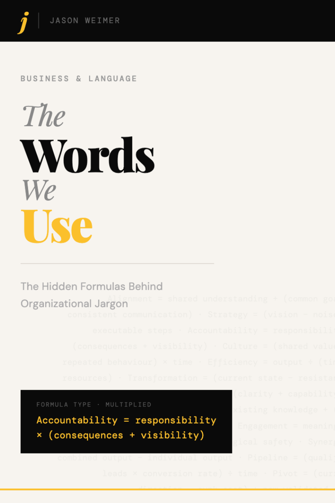

Decode a jargon word
Type a word or pick one to see its formula, components, and what it actually requires.
Or try one of these
Encode plain language into jargon
Enter up to three components, the observable behaviours or conditions behind a situation, and find which jargon words they produce. Not sure where to start? Pick a scenario or grab words from the bank below.
↑ Pick a cluster, then click any word below to drop it into the next empty field above.
Browse all words
Use the search or filter to narrow the list, then click a cluster bar to open it and explore the words inside.
Frameworks & Standards
Named frameworks, accounting standards, and professional tools. These have fixed, established meanings — they are the vocabulary of practice, not jargon to be decoded. Click any card to expand it.
Organizational Health Check
The master formula applied to your organization. Organizations can fail because one or more of five components are missing. This diagnostic tool names them. Answer honestly and find out the health of your organization.

The Words We Use
The Hidden Formulas Behind Organizational Jargon
Every piece of organizational jargon is a compression of simpler things. This book finds those simpler things, builds a formula for each one, and shows you what the word actually requires — so the next time someone says it in a meeting, you know exactly what they mean and whether they do too.
A formula for every word that gets used without definition.
Jason Weimer
Jason Weimer is an author, educator, and podcast host based in Bangkok, Thailand, where he teaches at an international school and hosts the student marketing podcast Students Incorporated.
He has spent years inside organizations watching the same words used in different rooms to mean different things — and wrote this book to give those words a definition that holds.
Once you have the formula, the word is no longer vague. It has components. It has weight and meaning. It can be tested and verified.

Each entry shows the official definition, what the word actually means in practice, the formula, and why it is shaped that way.

Direction, People, Resources, Process, and Results. Every organizational word belongs to one of these five questions.

Each cluster opens with real stories that show where jargon breaks down — and what it costs when it does.
Ready to decode the words your organization uses?
About the formula system
This tool decodes organizational jargon using the formula system from The Words We Use: The Hidden Formulas Behind Organizational Jargon by Jason Weimer.
Every piece of organizational jargon is a compression of simpler components. Find the simpler things and you have a formula. Once you have the formula, the word is no longer vague. It has components. It has weight and meaning. It can be tested and verified.
The six formula types
The five clusters
Where the five clusters come from
The five clusters did not come from theory. They came from a mix of the principles of management and other organizational source domains. All organizational jargon belongs to one of these. When these were mapped against hundreds of jargon words, five clusters emerged. Every jargon word in every organization fits inside one of them. Note: the principle of Controlling applies across all five clusters — not just Results.
Frameworks & Standards categories
Named frameworks, accounting standards, and professional tools sit outside the five clusters. They have fixed, established meanings — not jargon to be decoded, but vocabulary every professional encounters. They are organized into five categories.